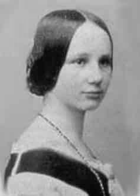

Ada Lovelace
Naturalidade: Inglaterra
Nascimento: 10/12/1815
Fama: Augusta Ada Byron King, Condessa de Lovelace atualmente conhecida como Ada Lovelace, foi uma matemática e escritora inglesa. É reconhecida principalmente por ter escrito o primeiro algoritmo para ser processado por uma máquina, a máquina analítica de Charles Babbage. Durante o período em que esteve envolvida com o projeto de Babbage, ela desenvolveu os algoritmos que permitiriam à máquina computar os valores de funções matemáticas, além de publicar uma coleção de notas sobre a máquina analítica. Por esse trabalho é considerada a primeira programadora de toda a história.